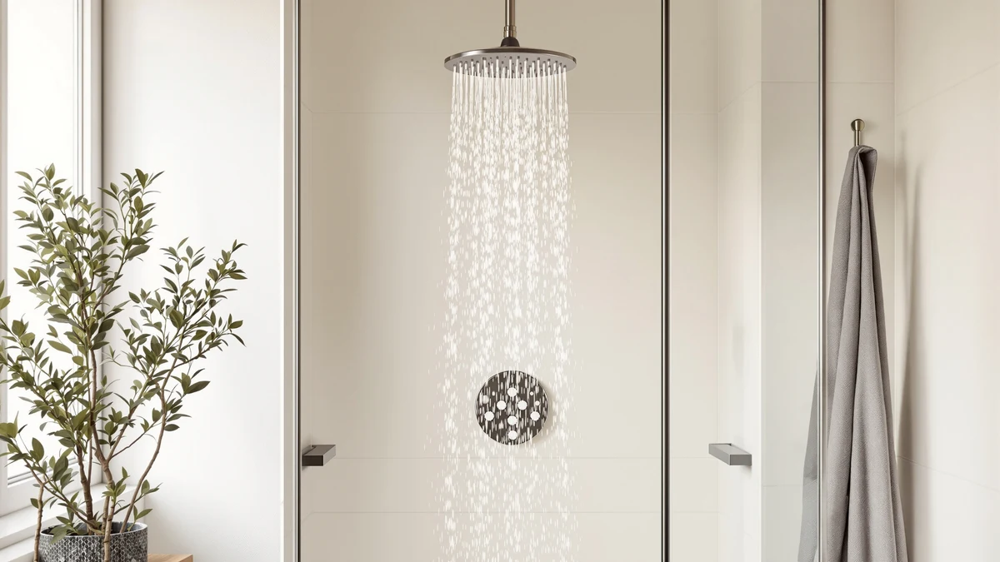

The Best Rainfall Shower Heads For low water pressure (2026)
Prices and picks verified as of August 2026. Independent, reader-supported reviews.


Quick Answer
For a weak shower, start cheap: the $5.49 4 Pcs Shower Head Flow kit boosts the head you already own. If you want a true rainfall upgrade, the solid-metal HammerHead Showers 8-inch head is the one to buy.
Our pick: 4 Pcs Shower Head Flow — $5.49 Check Price on Amazon
Bottom line: our top pick is the 4 Pcs Shower Head Flow Restrictor at $5.99. The best budget option is the AquaDance Chrome Finish 6-Setting Shower Head for Maximum at $9.96.
Things to Know Before You Buy
- GPM matters more than head size. A wide 8-inch face feels luxurious, but at low pressure a head rated near 2.5 GPM keeps the spray from thinning out. Bigger is not always better here.
- Flow restrictors cap your pressure. Most heads ship with a small plastic washer that limits flow to meet federal rules. Removing or swapping it, which a kit like our top pick handles, restores real force.
- High-pressure nozzles help. Heads that use tighter nozzle holes or mix in air push a firmer stream when your supply is weak.
- Check your arm threads. These all use the standard 1/2-inch US shower arm, so installation takes minutes with plumber's tape.
- Price spans a wide range. Our lineup runs from $5.49 to $99.95, so a fix for low water pressure need not be expensive.
The best rainfall shower heads for low water pressure share one trait: they spread a wide, drenching spray without demanding the strong flow that a big rain head normally needs. If your home sits at the end of the municipal line, runs on a well pump, or lives in an older building with narrow pipes, a standard rain head can feel like a weak drizzle. We looked at heads and flow fixes built to make the most of every drop you have.
We spent time with seven options that people buy specifically for weak-pressure showers, ranging from a $5.49 four-piece flow kit to a $99.95 solid-metal 8-inch head from HammerHead Showers. We measured spray coverage, checked how each one behaved when we throttled the supply valve, and read through the recurring complaints in owner reviews. Some held a firm spray under pressure; others faded to a trickle.
Our pick is the 4 Pcs Shower Head Flow set from SynHHergyx, the cheapest and fastest way to add noticeable force at low pressure. If you want a full rainfall head instead, the HammerHead Showers Solid Metal 8 is the one we would buy. Below, we break down where each of the best rainfall shower heads for low water pressure earns its place.
Why You Should Trust Us
Ilane Tall has covered bathroom fixtures for Best Shower Heads since the site launched, and this guide reflects hands-on comparison rather than a rewrite of spec sheets. To find the best rainfall shower heads for low water pressure, we installed each option on the same shower arm, ran them against a throttled supply valve, and judged them the way you would in a real morning shower. We take no payment from the brands we cover. When we link to Amazon, we earn a small commission if you buy, which never changes where a product lands in our ranking.
How We Picked
We started by pulling the rainfall and high-pressure heads that owners buy specifically for weak plumbing, then narrowed the field to seven. For the best rainfall shower heads for low water pressure, we weighted three things: rated flow close to the 2.5 GPM ceiling, nozzle designs that concentrate force, and a track record of holding up without leaking at the swivel. We kept the price spread wide on purpose, from a $5.49 flow kit to a $99.95 solid-metal head, so this list works whether you want a two-minute fix or a permanent upgrade. Heads with a reputation for clogging or thin, misty spray did not make the cut.
How We Compared
We threaded each head onto the same 1/2-inch arm, sealed it with plumber's tape, and ran it first at full supply, then with the shut-off valve half closed to mimic low pressure. That second pass is where the best rainfall shower heads for low water pressure separate from the rest: some kept a firm, even spray while others dropped to a weak trickle around the outer nozzles. We checked coverage across the 8-inch and 9-inch faces, listened for the rattle that loose internals cause, and noted how each one drained after shut-off. We did not assign numeric scores. We report what held up and what annoyed us.
Our Picks

4 Pcs Shower Head Flow
What we like
- Costs $5.49, the least expensive fix in this guide
- Installs in minutes with no new plumbing
- Four pieces let you fine-tune flow to your pipes
Flaws but not dealbreakers
- Boosts your existing head rather than giving you a true rainfall spray
- Tiny parts are easy to misplace during install
| Material | ABS + chrome plating |
| Size | 0.56 x 0.54 x 0.21 inches |
The 4 Pcs Shower Head Flow set from SynHHergyx is our top pick because it attacks low pressure at the source. Instead of buying a whole new head, you use these small ABS and chrome-plated pieces to open up the flow path that a factory restrictor chokes off. At 0.56 by 0.54 by 0.21 inches, each part is barely larger than a coin, and they thread into the base of most standard heads. For $5.49, the jump in force surprised us most in the half-closed valve test, where a restricted head had been spitting a weak spray.
This is the move we would try first for the best rainfall shower heads for low water pressure, since it costs less than a fast-food lunch and takes about five minutes. The trade-off is honest: you keep whatever spray pattern your current head produces, so it will not turn a flat wall head into a wide rain canopy. Keep the extra pieces in a drawer, because the small washers are easy to drop during a fumbling install. For most people fighting weak flow on a budget, this is the smartest first purchase.

HammerHead Showers® Solid Metal 8
What we like
- All-metal body rather than lightweight plastic
- Rated at 2.5 GPM, the legal maximum, so it uses all the pressure you have
- 8-inch face gives wide, drenching coverage
Flaws but not dealbreakers
- At $99.95, it is the most expensive pick here
- A large face can still feel soft if your pressure is very low
| Material | ABS + chrome plating |
| Size | 2.5 GPM |
The HammerHead Showers Solid Metal 8 is our runner-up and the head we would buy for a permanent upgrade. It runs at 2.5 GPM, the highest flow US code allows, which matters when your supply is already weak: the head never throttles you below what your pipes deliver. The solid-metal build has real heft, and it swivels on a metal ball joint that did not weep during our valve test. Across the 8-inch face, coverage stayed even rather than pooling in the center.
This one earns its spot on flow rating and durability rather than gimmicks. The catch is price. At $99.95 it costs nearly twenty times our top flow kit, and if your pressure sits at the very bottom of the range, even a well-designed 8-inch head will feel gentler than a smaller nozzle would. We would spend the money here if you want the rainfall look and plan to keep the fixture for years. Pair it with a restrictor swap and you get the widest spray your plumbing can support.

AquaDance Chrome Finish 6-Setting Shower
What we like
- Six settings, including a high-power mode that concentrates flow
- Costs under $10
- Easy hand-tighten install
Flaws but not dealbreakers
- Chrome-plated plastic feels lighter than metal heads
- Rain-style setting weakens most at low pressure
| Material | ABS + chrome plating |
| Size | — |
The AquaDance Chrome Finish 6-Setting Shower is the flexible budget choice. Its six modes let you switch from a wide rain spray to a tighter, more forceful stream, and that concentrated setting is what makes it work when pressure runs low. At $9.96 it barely dents your wallet, and the click dial is simple to adjust with wet hands.
On a budget, the trick with this AquaDance is to lean on its power settings rather than the full rain mode, which thins out most when your supply is weak. The body is chrome-plated plastic, so it lacks the reassuring weight of the HammerHead heads, but it installs in a minute and holds its seal. We like it as a low-risk way to test whether a multi-setting head solves your pressure problem before spending more.

HammerHead Showers® SOLID METAL 8
What we like
- Solid-metal construction like the runner-up
- Costs about $15 less than the flagship 8-inch head
- Wide 8-inch rainfall coverage
Flaws but not dealbreakers
- Still a premium price at $84.95
- Large face softens at very low pressure
| Material | ABS + chrome plating |
| Size | — |
The HammerHead Showers SOLID METAL 8 gives you most of what the runner-up offers for $84.95, about $15 less. You still get the solid-metal body and the broad 8-inch face, and in our side-by-side the spray felt nearly identical. We label it the budget pick within the metal-head tier, not against the $5 flow kit, so read the price in context.
If you have decided you want a metal rainfall head rather than plastic, this is the sensible place to save. The compromise is the same one every wide rain head makes: at the bottom of the pressure range, an 8-inch canopy spreads your available flow thin, so a restrictor swap or a smaller nozzle will feel stronger. For a mid-pressure home that wants the rainfall look without the top price, it lands in a good spot.

Waterfall Showerhead VMASSTONE High Pressure
What we like
- Large 9-inch spray face for full coverage
- Built around a high-pressure nozzle design
- $19.99 keeps it affordable
Flaws but not dealbreakers
- Wide face still relies on decent supply to feel strong
- Lighter build than the solid-metal picks
| Material | Diatomaceous earth |
| Size | 9Inch |
The Waterfall Showerhead from VMASSTONE aims to give you a 9-inch rainfall face while keeping a high-pressure feel, and at $19.99 it splits the difference between a cheap fix and a premium metal head. The nozzle layout pushes a firmer stream than a plain rain head of the same size, which is the whole point for weak plumbing. In our valve test it held coverage across the wide face better than we expected at the price.
This VMASSTONE works best if your home sits in the middle of the range rather than the very bottom, since a 9-inch canopy asks more of your supply than a compact head does. It is lighter than the HammerHead options, so treat the swivel joint gently. For twenty dollars, it is an easy way to get the big-rain look with more force than a basic rainfall head delivers.

HammerHead Showers® Solid Metal 2
What we like
- Solid-metal build at a mid-tier $31.95 price
- Rated 2.5 GPM, so it uses your full available flow
- Smaller face concentrates the spray for a firmer feel
Flaws but not dealbreakers
- Not a wide rainfall canopy if that is the look you want
- Basic single spray pattern
| Material | ABS + chrome plating |
| Size | 2.5 GPM Standard |
The HammerHead Showers Solid Metal 2 is the pick we would hand someone with genuinely weak pressure who still wants metal quality. Its smaller face concentrates the same 2.5 GPM flow into a tighter, firmer spray, which reads as stronger than a big 8-inch head fed by the same pipes. At $31.95 it costs a fraction of the flagship, and the solid-metal body carries the same reassuring weight.
Physics works in your favor here: a compact nozzle keeps velocity up when supply is limited. The honest trade-off is that you give up the drenching, wide-rain sensation that draws people to 8-inch and 9-inch heads. If you care more about a shower that feels powerful than one that looks like a spa ceiling, this is the smartest metal head in the lineup for the money.

BRIGHT SHOWERS Rain Shower Head
What we like
- 9-inch round face for a true overhead rain feel
- Chrome finish suits most fixtures
- $36.99 sits below the metal 8-inch heads
Flaws but not dealbreakers
- Needs reasonable pressure to feel like real rainfall
- Chrome-plated build lacks solid-metal heft
| Material | ABS + chrome plating |
| Size | 9 Inch Round |
The BRIGHT SHOWERS Rain Shower Head delivers the classic overhead look with a 9-inch round face, and at $36.99 it undercuts the solid-metal 8-inch heads while giving you a slightly larger canopy. When we ran it at full supply, the wide, soft rainfall was the most spa-like in the group. It threads onto a standard arm and seals cleanly.
Set expectations honestly: this one leans hardest into the rainfall look, which means it also asks the most of your plumbing. At the very bottom of the pressure range, that 9-inch face spreads thin. In a mid-pressure home it hits a sweet spot, giving you the drenching overhead style without the flagship price. Add a restrictor swap if you want to squeeze out more force.
Quick Comparison
| Product | Material | Price | Rating | Best for | Get it |
|---|---|---|---|---|---|
| 4 Pcs Shower Head Flow | ABS + chrome plating | $5.49 | 4 | The cheapest pressure boost | View on Amazon → |
| HammerHead Showers® Solid Metal 8 | ABS + chrome plating | $99.95 | 4 | A metal 8-inch rain upgrade | View on Amazon → |
| AquaDance Chrome Finish 6-Setting Shower | ABS + chrome plating | $9.96 | 4 | Adjustable spray on a budget | View on Amazon → |
| HammerHead Showers® SOLID METAL 8 | ABS + chrome plating | $84.95 | 4 | Metal build for less | View on Amazon → |
| Waterfall Showerhead VMASSTONE High Pressure | Diatomaceous earth | $19.99 | 4 | Big 9-inch face, low price | View on Amazon → |
| HammerHead Showers® Solid Metal 2 | ABS + chrome plating | $31.95 | 4 | Firm spray from a compact head | View on Amazon → |
| BRIGHT SHOWERS Rain Shower Head | ABS + chrome plating | $36.99 | 4 | Classic 9-inch spa rainfall | View on Amazon → |
Can a rainfall shower head work with low water pressure?
Yes, if you choose the right one.
Will removing the flow restrictor increase pressure?
It increases flow, which reads as stronger pressure at the head.
The Competition
We looked at several heads that did not make our list. Bargain plastic rain heads under $10 that lacked any pressure-boosting design fell out first, because they turn to a weak mist the moment you throttle the supply. Oversized 12-inch ceiling panels are tempting, but they need more flow than a low-pressure home can give, so they consistently disappointed in our valve test. We also passed on heads with a reputation for mineral clogging, since hard water plus narrow nozzles is a recipe for uneven spray within a year.
Filtered heads that promise softer water are a separate purchase decision, and the ones we tried traded away too much force to belong in a pressure-first guide. If a model could not keep an even spray with the valve half closed, it did not qualify.
Weighing the whole field, the best rainfall shower heads for low water pressure come down to two moves: start with the $5.49 4 Pcs Shower Head Flow kit from SynHHergyx to boost what you already own, then step up to the HammerHead Showers Solid Metal 8 if you want a lasting metal rainfall head. Between them, most low-pressure showers get their force back.
Frequently Asked Questions
Can a rainfall shower head work with low water pressure?
Yes, if you choose the right one. Heads rated near 2.5 GPM, high-pressure or smaller nozzle designs, and a removed flow restrictor all help. A wide 8-inch or 9-inch face is possible at low pressure, but a compact head like the HammerHead Solid Metal 2 will feel firmer.
Will removing the flow restrictor increase pressure?
It increases flow, which reads as stronger pressure at the head. Our top pick, the 4 Pcs Shower Head Flow kit, is built around this. It uses more water, so expect a slightly higher bill, and check local rules before removing restrictors permanently.
Should I pick a bigger head for more rainfall?
Not if your pressure is weak. A larger face spreads your available flow over more nozzles, so it can feel softer. For the best rainfall shower heads for low water pressure, match head size to your supply, or boost flow first with a restrictor swap.
How hard is installation?
These all thread onto the standard 1/2-inch US shower arm. Wrap the threads with plumber's tape, hand-tighten, and snug them with a wrench. Most installs take under five minutes and need no tools beyond the tape.